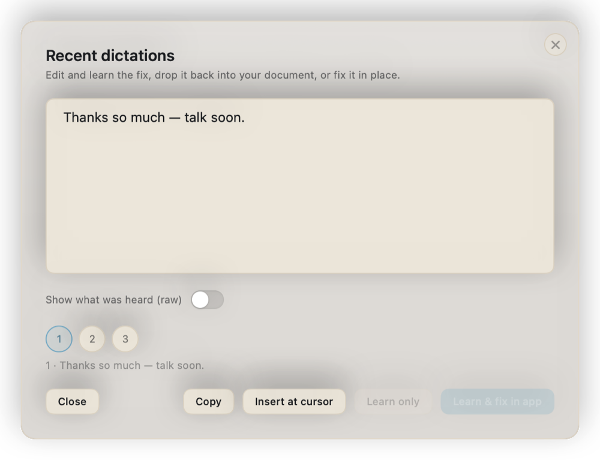
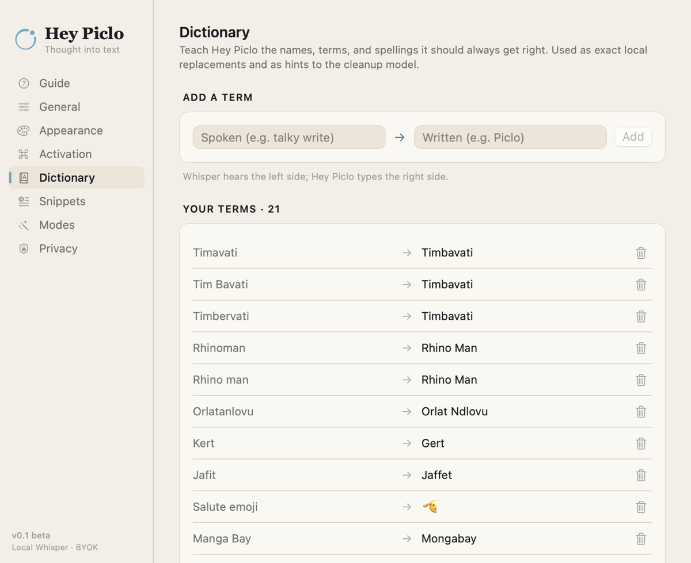
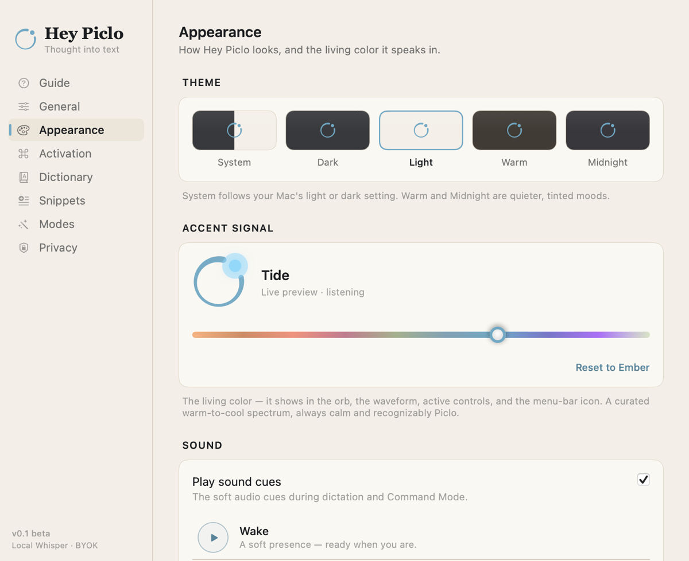
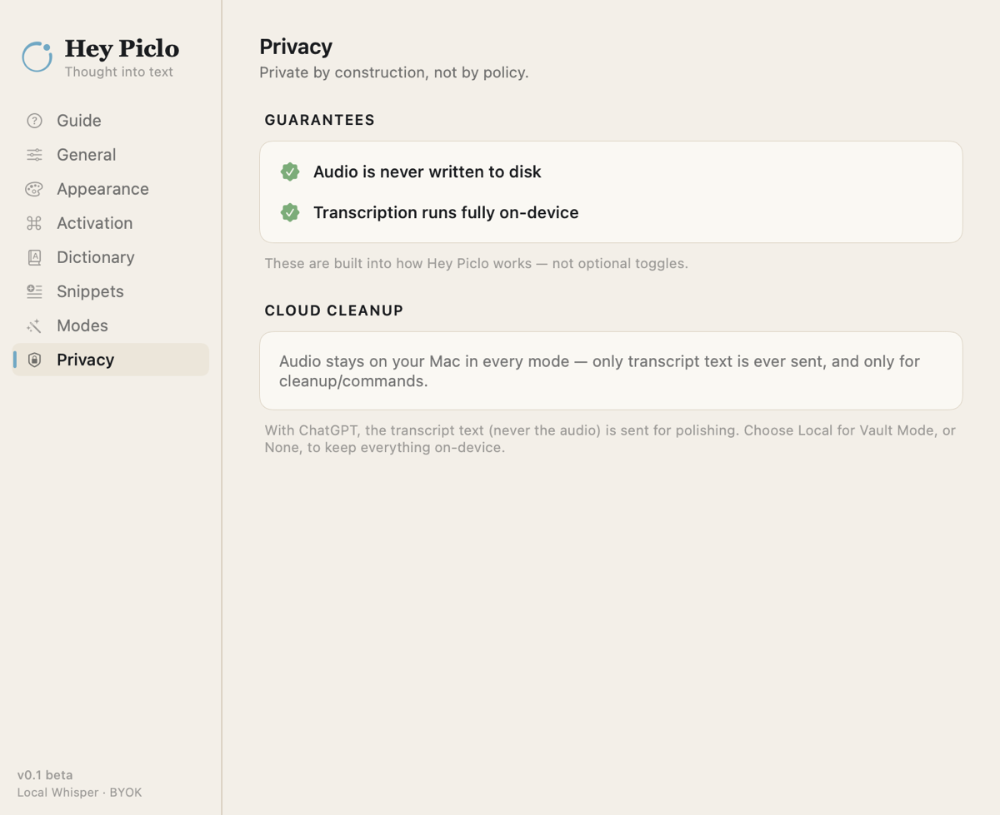

Dictate anywhere
No wake word, no window to find. Dictation and commands live on different keys, so they never collide. Prefer other keys? Both gestures are rebindable in Settings.
Double-tap Control and speak. Your words are transcribed on your Mac and typed right where your cursor is. Tap twice again to finish.
The dictation level sets how much cleanup you get: Raw, Light, Full, or Max. Step it with the shortcut, or right from the pill while you speak.
Command your text
Select some text, Double-tap ⌘, and say what you want done with it. Plain words in, real edits out: Piclo edits, transforms, formats, or researches in place.
Piclo uses the right model for the job: quick edits stay light, deeper work can step up when you ask. All on keys you bring.
Fix it once. It stays fixed.
Whisper may garble your city, your product, your friend's name. Piclo is built around the loop that fixes that for good.
Correct it, and it learns
Fix a misheard word once, and the correction joins your dictionary. The same word lands right next time.
Meet you at TimavatiTimbavati next week.
One gesture opens your recent dictations: copy a take, re-insert it, or open it in the editor to fix and teach.

Your vocabulary rides along
Names, jargon, and brands stay with the transcript as hints to cleanup. Teach Piclo once; the same word lands right next time. And when a correction looks like a name, Piclo notices and offers to remember it on its own.

Snippets and modes
Boilerplate by voice, and writing that fits where it lands.
Boilerplate, by voice
Save a snippet once, then say “snippet my sign-off” mid-dictation and the full text drops in.
Warm regards,
John
July 8, 2026
Snippets can carry live values like {date}, {time}, and {clipboard}, filled in the moment they land.
It knows where you're typing
Piclo picks a writing mode from the app you're dictating into, so Mail gets an email shape and Slack stays casual. Want it pinned? Just say “switch to email mode.”
Can we push the demo to Thursday afternoon? My morning is packed.
Hi Sam,
Could we move the demo to Thursday afternoon? My morning is fully booked.
Thanks,
John
The built-in modes. Add your own, with your own prompt.
A finely tuned instrument
Piclo has four themes and one living accent color. Tune the signal once; the whole app follows. This page wears Tide, the default.
Real screenshots from the current beta. The panels follow your Mac's light or dark appearance, and so does this page.

Private by construction, not by policy
The privacy claims are properties of the code, not promises in a document.
- Audio is never written to disk. It lives in memory and is wiped after transcription. There is no code path that saves it.
- Transcription is 100% on-device, powered by Whisper running on your Mac.
- No account, no telemetry, nothing phones home. The only network calls are the ones you set up.
- Cloud AI is optional and yours. Bring your own Claude, ChatGPT, or Gemini key, stored in the macOS Keychain, sent to that one provider and nowhere else.
- Or skip the cloud entirely. Piclo works with any local model server, like Ollama or LM Studio, so cleanup runs on your machine too.

One switch that guarantees nothing leaves your Mac. Transcription and cleanup both run locally, and the app refuses every cloud call while it's on. Flip it before you say something sensitive.
Bring your own AI
No account, no middleman, no markup. Paste your own API key, stored in the macOS Keychain and sent only to the provider you chose. Cleanup runs on your key, your account, your rates. Or point Piclo at a local model and skip the cloud entirely.
Claude is Anthropic’s AI, careful with tone and very good at rewrites that still sound like you.
Get your Anthropic keyPaste it into Piclo once. It lives in your macOS Keychain and is sent only to Anthropic.